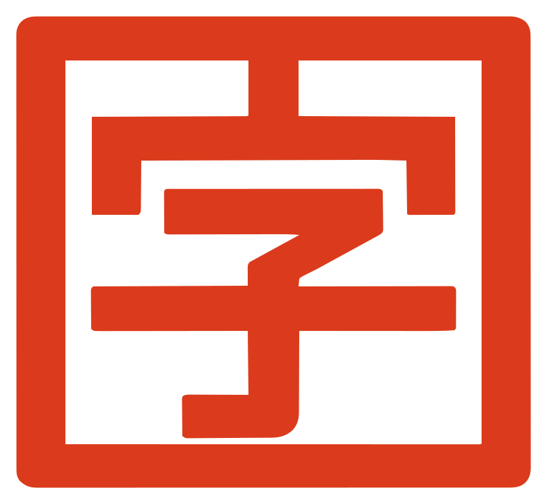

AZAORI
保存
自動実行
■ 止める
▶ 実行
Ctrl+Enter
？
ヘルプ
⚙
設定
スペースを色で示す
スペース
全角スペース
省略した主語を薄く表示する
漢字パレットを表示する
▤
無題.azo
▥ 結果
▤ 書き下し
その他
▾
展開（主語の省略を書き出す）
型と効果
トークン
構文木
文法メモ
▼
実行結果
準備中…
⧉ コピー
待
答える
Enter
はい
いいえ
▼
変数の状態
字の一覧・規則・例です。例はすべてテストで実際に動かして、結果を照合しています。例の書き方をクリックすると、エディタの末尾に入ります。
漢字パレット
字をクリックすると、カーソルの位置に入ります
📖 AZAORI リファレンス（文法メモ）